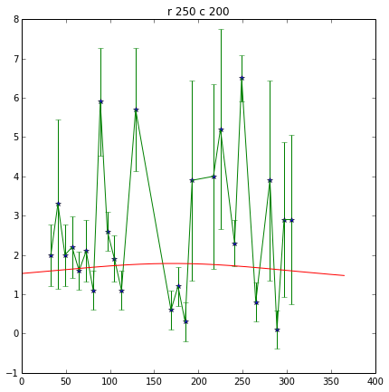
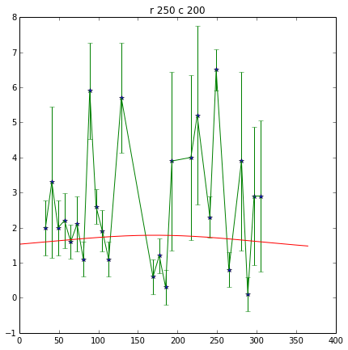
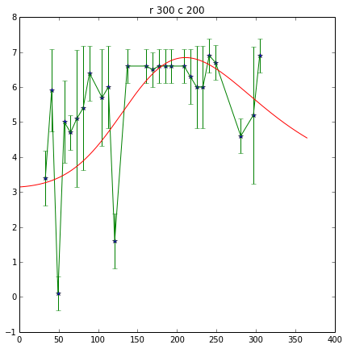
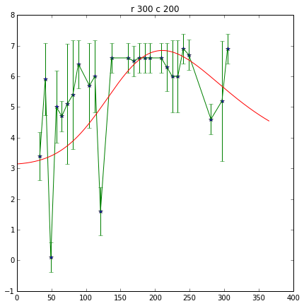

5. Function fitting and Interpolation
In today’s session, we will be using some of the LAI datasets we examined last week (masked by national boundaries) and doing some analysis on them.
- 5.1 Making 3D datasets and Movies First, we will examine how to improve our data reading function by extracting only the area we are interested in. This involves querying the ‘country’ mask to find its limits and passing this information through to the reader.
- 5.2 Interpolation Then we will look at methods to interpolate and smooth over gaps in datasets using various methods.
- 5.3 Function Fitting Finally, we will look at fitting models to datasets, in this case a model describing LAI phenology.
5.1 Making 3D datasets and Movies
First though, we will briefly go over once more the work we did on downloading data (ussssing wget), generating 3D masked datasets, and making movies.
This time, we will concentrate more on generating functions that we can re-use for other purposes.
5.1.1 Downloading data
We start by filtering the file files/data/robot.txt to get only lines (containing urls) for a particular tile and year.
We might easily do this in unix:
# filter LAI MODIS files for this year and tile (in bash)
tile='h17v03'
year='2005'
ofile=files/data/modis_lai_${tile}_${year}.txt
grep $tile < files/data/robot.txt | grep \/$year > $ofile
# have a look at the first few
head -4 < $ofile
http://e4ftl01.cr.usgs.gov/MODIS_Composites/MOTA/MCD15A2.005/2005.01.01/MCD15A2.A2005001.h17v03.005.2007350235547.hdf
http://e4ftl01.cr.usgs.gov/MODIS_Composites/MOTA/MCD15A2.005/2005.01.09/MCD15A2.A2005009.h17v03.005.2007351235445.hdf
http://e4ftl01.cr.usgs.gov/MODIS_Composites/MOTA/MCD15A2.005/2005.01.17/MCD15A2.A2005017.h17v03.005.2007352033411.hdf
http://e4ftl01.cr.usgs.gov/MODIS_Composites/MOTA/MCD15A2.005/2005.01.25/MCD15A2.A2005025.h17v03.005.2007353055037.hdf
Now download the datasets:
tile='h17v03'
year='2005'
ofile=files/data/modis_lai_${tile}_${year}.txt
# go into the directory we want the data
pushd files/data
# get the urls from the file
# --cut-dirs=4 this time as there are 4 laters of directory we
# wish to ignore with this dataset
wget --quiet -nc -nH --cut-dirs=4 -i ../$ofile
# go back to where we were
popd
/archive/rsu_raid_0/plewis/public_html/geogg122_local/geogg122/Chapter5_Interpolation/files/data /archive/rsu_raid_0/plewis/public_html/geogg122_local/geogg122/Chapter5_Interpolation
/archive/rsu_raid_0/plewis/public_html/geogg122_local/geogg122/Chapter5_Interpolation
5.1.2 Read from an ASCII file
The ASCII file files/data/modis_lai_${tile}_${year}.txt contains lines of urls.
Each line (each url) is a string such as:
http://e4ftl01.cr.usgs.gov/MODIS_Composites/MOTA/MCD15A2.005/2005.01.25/MCD15A2.A2005025.h17v03.005.2007353055037.hdf
The filename here is MCD15A2.A2005025.h17v03.005.2007353055037.hdf, so we can split the url on the field / to get this:
Let’s read the filenames from the text file that has the urls in it and load it into a list that we will call filelist:
import numpy as np
tile = 'h17v03'
year = '2005'
# specify the file with the urls in
ifile= 'files/data/modis_lai_%s_%s.txt'%(tile,year)
# one way to read the data from the file
fp = open(ifile)
lines = fp.readlines()
filelist = []
for url in lines:
filename = url.split('/')[-1].strip()
filelist.append(filename)
fp.close()
# show the first few
print filelist[:5]
['MCD15A2.A2005001.h17v03.005.2007350235547.hdf', 'MCD15A2.A2005009.h17v03.005.2007351235445.hdf', 'MCD15A2.A2005017.h17v03.005.2007352033411.hdf', 'MCD15A2.A2005025.h17v03.005.2007353055037.hdf', 'MCD15A2.A2005033.h17v03.005.2007355050158.hdf']
# a neater way:
fp = open(ifile)
filelist = [url.split('/')[-1].strip() for url in fp.readlines()]
fp.close()
# show the first few
print filelist[:5]
['MCD15A2.A2005001.h17v03.005.2007350235547.hdf', 'MCD15A2.A2005009.h17v03.005.2007351235445.hdf', 'MCD15A2.A2005017.h17v03.005.2007352033411.hdf', 'MCD15A2.A2005025.h17v03.005.2007353055037.hdf', 'MCD15A2.A2005033.h17v03.005.2007355050158.hdf']
# an even neater way using np.loadtxt
# But don't worry if you don't quite get this one yet!
# define a function get_filename(f)
# When a function is 'small' its easier to use a lambda definition!
get_filename = lambda f: f.split('/')[-1]
filelist = np.loadtxt(ifile,dtype='str',converters={0:get_filename})
print filelist[:5]
['MCD15A2.A2005001.h17v03.005.2007350235547.hdf'
'MCD15A2.A2005009.h17v03.005.2007351235445.hdf'
'MCD15A2.A2005017.h17v03.005.2007352033411.hdf'
'MCD15A2.A2005025.h17v03.005.2007353055037.hdf'
'MCD15A2.A2005033.h17v03.005.2007355050158.hdf']
5.1.3 Read Just The Data We Want
Last time, we generated a function to read MODIS LAI data.
We have now included such a function in the directory `files/python <files/python>`__ called `get_lai.py <files/python/get_lai.py>`__.
The only added sophistication is that when we call ReadAsArray, we give it the starting cols, rows, and number of cols and rows to read (e.g. xsize=600,yoff=300,xoff=300,ysize=600):
# Now we have a list of filenames
# load read_lai
import sys
sys.path.insert(0,'files/python')
from get_lai import get_lai
help(get_lai)
Help on function get_lai in module get_lai:
get_lai(filename, qc_layer='FparLai_QC', scale=[0.1, 0.1], mincol=0, minrow=0, ncol=None, nrow=None, selected_layers=['Lai_1km', 'LaiStdDev_1km'])
# e.g. for reading a single file:
lai_file0 = get_lai('files/data/%s'%filelist[20],ncol=600,mincol=300,minrow=400,nrow=800)
plt.imshow(lai_file0['Lai_1km'])
<matplotlib.image.AxesImage at 0x10342b50>

print type(lai_file0)
print lai_file0.keys()
<type 'dict'>
['Lai_1km', 'LaiStdDev_1km']
The function returns a dictionary with has keys ['Lai_1km', 'LaiStdDev_1km', 'FparLai_QC']:
print lai_file0['Lai_1km'].shape
(800, 600)
Each of these datasets is of shape (1200, 1200), but we have read only 600 (columns) and 800 (rows) in this case. Note that the numpy indexing is (rows,cols).
We know how to create a mask from a vector dataset from thelast session:
from raster_mask import raster_mask
# make a raster mask
# from the layer IRELAND in world.shp
filename = filelist[0]
file_template = 'HDF4_EOS:EOS_GRID:"%s":MOD_Grid_MOD15A2:%s'
file_spec = file_template%('files/data/%s'%filename,'Lai_1km')
mask = raster_mask(file_spec,\
target_vector_file = "files/data/world.shp",\
attribute_filter = "NAME = 'IRELAND'")
plt.imshow(mask)
plt.colorbar()
<matplotlib.colorbar.Colorbar instance at 0x10ae5bd8>
In this case, the data we want is only a small section of the whole spatial dataset.
It would be convenient to extract only the part we want.
We can use numpy.where() to help with this:
# The mask is False for the area we want
rowpix,colpix = np.where(mask == False)
print rowpix,colpix
[ 548 548 548 ..., 1024 1025 1025] [693 694 695 ..., 476 473 474]
rowpix and colpix are lists of pixel coordinates where the condition we specified is True (i.e. where mask is False).
If we wanted to find the bounds of this area, we simply need to know the minimum and maximum column and row in these lists:
mincol,maxcol = min(colpix),max(colpix)
minrow,maxrow = min(rowpix),max(rowpix)
# think about why the + 1 here!!!
# what if maxcol and mincol were the same?
ncol = maxcol - mincol + 1
nrow = maxrow - minrow + 1
print minrow,mincol,nrow,ncol
548 422 478 348
We could use this information to extract only the area we want when we read the data:
lai_file0 = get_lai('files/data/%s'%filelist[20],\
ncol=ncol,nrow=nrow,mincol=mincol,minrow=minrow)
plt.imshow(lai_file0['Lai_1km'],interpolation='none')
<matplotlib.image.AxesImage at 0x10ddc2d0>
Now, lets extract this portion of the mask:
small_mask = mask[minrow:minrow+nrow,mincol:mincol+ncol]
plt.imshow(small_mask,interpolation='none')
<matplotlib.image.AxesImage at 0x2ae9e41a3750>

And combine the country mask with the small dataset:
As a recap, we can use the function raster_mask that we gave you last time to develop a raster mask (!) from an ESRI shapefile (files/data/world.shp here).
We can then combine this mask with the QC-derived mask in the LAI dataset.
The LAI mask (that will be lai.mask in the code below) is False for good data, as is the coutry mask.
To combine them, we want some operator X for which:
The operator to use then is an or, here, a bitwise or, |.
lai_file0 = get_lai('files/data/%s'%filelist[20],\
ncol=ncol,nrow=nrow,mincol=mincol,minrow=minrow)
layer = 'Lai_1km'
lai = lai_file0[layer]
small_mask = mask[minrow:minrow+nrow,mincol:mincol+ncol]
# combined mask
new_mask = small_mask | lai.mask
plt.figure(figsize=(7,7))
plt.imshow(new_mask,interpolation='none')
lai = ma.array(lai,mask=new_mask)
plt.figure(figsize=(7,7))
plt.imshow(lai,interpolation='none')
<matplotlib.image.AxesImage at 0x2ae9e4275f50>

We should be used to writing loops around such functions.
In this case, we read all of the files in filelist and put the data into the dictionary called lai here.
Because there are multiple layers in the datasets, we loop over layer and append to each list indiviually:
# load 'em all ...
# for United Kingdom here
import numpy.ma as ma
from raster_mask import raster_mask
country = 'UNITED KINGDOM'
# make a raster mask
# from the layer UNITED KINGDOM in world.shp
filename = filelist[0]
file_template = 'HDF4_EOS:EOS_GRID:"%s":MOD_Grid_MOD15A2:%s'
file_spec = file_template%('files/data/%s'%filename,'Lai_1km')
mask = raster_mask(file_spec,\
target_vector_file = "files/data/world.shp",\
attribute_filter = "NAME = '%s'"%country)
# extract just the area we want
# by getting the min/max rows/cols
# of the data mask
# The mask is False for the area we want
rowpix,colpix = np.where(mask == False)
mincol,maxcol = min(colpix),max(colpix)
minrow,maxrow = min(rowpix),max(rowpix)
ncol = maxcol - mincol + 1
nrow = maxrow - minrow + 1
# and make a small mask
small_mask = mask[minrow:minrow+nrow,mincol:mincol+ncol]
# data_fields with empty lists
data_fields = {'LaiStdDev_1km':[],'Lai_1km':[]}
# make a dictionary and put the filenames in it
# along with the mask and min/max info
lai = {'filenames':np.sort(filelist),\
'minrow':minrow,'mincol':mincol,\
'mask':small_mask}
# combine the dictionaries
lai.update(data_fields)
# loop over each filename
for f in np.sort(lai['filenames']):
this_lai = get_lai('files/data/%s'%f,\
mincol=mincol,ncol=ncol,\
minrow=minrow,nrow=nrow)
for layer in data_fields.keys():
# apply the mask
new_mask = this_lai[layer].mask | small_mask
this_lai[layer] = ma.array(this_lai[layer],mask=new_mask)
lai[layer].append(this_lai[layer])
# have a look at one of these
i = 20
import pylab as plt
# just see what the shape is ...
print lai['Lai_1km'][i].shape
root = 'files/images/lai_uk'
cmap = plt.cm.Greens
f = lai['filenames'][i]
fig = plt.figure(figsize=(7,7))
# get some info from filename
file_id = f.split('/')[-1].split('.')[-5][1:]
print file_id
plt.imshow(lai['Lai_1km'][i],cmap=cmap,interpolation='none',vmax=4.,vmin=0.0)
# plot a jpg
plt.title(file_id)
plt.colorbar()
plt.savefig('files/images/lai_uk_%s.jpg'%file_id)
(1200, 566)
2005161

# thats quite good, so put as a function:
import numpy.ma as ma
import numpy as np
import sys
sys.path.insert(0,'files/python')
from get_lai import get_lai
from raster_mask import raster_mask
def read_lai(filelist,datadir='files/data',country=None):
'''
Read MODIS LAI data from a set of files
in the list filelist. Data assumed to be in
directory datadir.
Parameters:
filelist : list of LAI files
Options:
datadir : data directory
country : country name (in files/data/world.shp)
Returns:
lai dictionary
'''
if country:
# make a raster mask
# from the layer UNITED KINGDOM in world.shp
file_template = 'HDF4_EOS:EOS_GRID:"%s":MOD_Grid_MOD15A2:%s'
file_spec = file_template%('files/data/%s'%filelist[0],'Lai_1km')
mask = raster_mask(file_spec,\
target_vector_file = "files/data/world.shp",\
attribute_filter = "NAME = '%s'"%country)
# extract just the area we want
# by getting the min/max rows/cols
# of the data mask
# The mask is False for the area we want
rowpix,colpix = np.where(mask == False)
mincol,maxcol = min(colpix),max(colpix)
minrow,maxrow = min(rowpix),max(rowpix)
ncol = maxcol - mincol + 1
nrow = maxrow - minrow + 1
# and make a small mask
small_mask = mask[minrow:minrow+nrow,mincol:mincol+ncol]
else:
# no country
mincol = 0
maxcol = 0
ncol = None
nrow = None
# data_fields with empty lists
data_fields = {'LaiStdDev_1km':[],'Lai_1km':[]}
# make a dictionary and put the filenames in it
# along with the mask and min/max info
lai = {'filenames':np.sort(filelist),\
'minrow':minrow,'mincol':mincol,\
'mask':small_mask}
# combine the dictionaries
lai.update(data_fields)
# loop over each filename
for f in np.sort(lai['filenames']):
this_lai = get_lai('files/data/%s'%f,\
mincol=mincol,ncol=ncol,\
minrow=minrow,nrow=nrow)
for layer in data_fields.keys():
# apply the mask
if country:
new_mask = this_lai[layer].mask | small_mask
this_lai[layer] = ma.array(this_lai[layer],mask=new_mask)
lai[layer].append(this_lai[layer])
for layer in data_fields.keys():
lai[layer] = ma.array(lai[layer])
return lai
# test this ... the one in the file
# does a cutout of the data area as well
# which will keep the memory
# requirements down
from get_lai import read_lai
lai = read_lai(filelist,country='IRELAND',verbose=True)
# have a look at one of these
i = 20
# just see what the shape is ...
print lai['Lai_1km'][i].shape
root = 'files/images/lai_eire'
cmap = plt.cm.Greens
f = lai['filenames'][i]
fig = plt.figure(figsize=(7,7))
# get some info from filename
file_id = f.split('/')[-1].split('.')[-5][1:]
print file_id
plt.imshow(lai['Lai_1km'][i],cmap=cmap,interpolation='none',vmax=4.,vmin=0.0)
# plot a jpg
plt.title(file_id)
plt.colorbar()
plt.savefig('%s_%s.jpg'%(root,file_id))
creating mask of IRELAND
... MCD15A2.A2005001.h17v03.005.2007350235547.hdf
... MCD15A2.A2005009.h17v03.005.2007351235445.hdf
... MCD15A2.A2005017.h17v03.005.2007352033411.hdf
... MCD15A2.A2005025.h17v03.005.2007353055037.hdf
... MCD15A2.A2005033.h17v03.005.2007355050158.hdf
... MCD15A2.A2005041.h17v03.005.2007357014602.hdf
... MCD15A2.A2005049.h17v03.005.2007360165724.hdf
... MCD15A2.A2005057.h17v03.005.2007361230641.hdf
... MCD15A2.A2005065.h17v03.005.2007365024202.hdf
... MCD15A2.A2005073.h17v03.005.2008001043631.hdf
... MCD15A2.A2005081.h17v03.005.2008003173048.hdf
... MCD15A2.A2005089.h17v03.005.2008005154542.hdf
... MCD15A2.A2005097.h17v03.005.2008007175837.hdf
... MCD15A2.A2005105.h17v03.005.2008018085544.hdf
... MCD15A2.A2005113.h17v03.005.2008021020137.hdf
... MCD15A2.A2005121.h17v03.005.2008021193749.hdf
... MCD15A2.A2005129.h17v03.005.2008024061330.hdf
... MCD15A2.A2005137.h17v03.005.2008032075236.hdf
... MCD15A2.A2005145.h17v03.005.2008033192556.hdf
... MCD15A2.A2005153.h17v03.005.2008035054421.hdf
... MCD15A2.A2005161.h17v03.005.2008036173810.hdf
... MCD15A2.A2005169.h17v03.005.2008039132812.hdf
... MCD15A2.A2005177.h17v03.005.2008042090537.hdf
... MCD15A2.A2005185.h17v03.005.2008044115459.hdf
... MCD15A2.A2005193.h17v03.005.2008046140018.hdf
... MCD15A2.A2005201.h17v03.005.2008050015227.hdf
... MCD15A2.A2005209.h17v03.005.2008052203557.hdf
... MCD15A2.A2005217.h17v03.005.2008055145215.hdf
... MCD15A2.A2005225.h17v03.005.2008057010213.hdf
... MCD15A2.A2005233.h17v03.005.2008060214119.hdf
... MCD15A2.A2005241.h17v03.005.2008063115631.hdf
... MCD15A2.A2005249.h17v03.005.1998144165707.hdf
... MCD15A2.A2005257.h17v03.005.2008067051936.hdf
... MCD15A2.A2005265.h17v03.005.2008069073121.hdf
... MCD15A2.A2005273.h17v03.005.2008071050025.hdf
... MCD15A2.A2005281.h17v03.005.2008072202421.hdf
... MCD15A2.A2005289.h17v03.005.2008074194126.hdf
... MCD15A2.A2005297.h17v03.005.2008077061121.hdf
... MCD15A2.A2005305.h17v03.005.2008080055607.hdf
... MCD15A2.A2005313.h17v03.005.2008083165435.hdf
... MCD15A2.A2005321.h17v03.005.2008084043211.hdf
... MCD15A2.A2005329.h17v03.005.2008086063619.hdf
... MCD15A2.A2005337.h17v03.005.2008087175845.hdf
... MCD15A2.A2005345.h17v03.005.2008088144615.hdf
... MCD15A2.A2005353.h17v03.005.2008091004441.hdf
... MCD15A2.A2005361.h17v03.005.2008091025114.hdf
... done
(478, 348)
2005161

# make a movie
import pylab as plt
import os
# just see what the shape is ...
print lai['Lai_1km'].shape
root = 'files/images/lai_country_eire'
cmap = plt.cm.Greens
for i,f in enumerate(lai['filenames']):
fig = plt.figure(figsize=(7,7))
# get some info from filename
file_id = f.split('/')[-1].split('.')[-5][1:]
print file_id
plt.imshow(lai['Lai_1km'][i],cmap=cmap,interpolation='none',vmax=4.,vmin=0.0)
# plot a jpg
plt.title(file_id)
plt.colorbar()
plt.savefig('%s_%s.jpg'%(root,file_id))
plt.close(fig)
cmd = 'convert -delay 100 -loop 0 {0}_*.jpg {0}_movie.gif'.format(root)
os.system(cmd)
(46, 478, 348)
2005001
2005009
2005017
2005025
2005033
2005041
2005049
2005057
2005065
2005073
2005081
2005089
2005097
2005105
2005113
2005121
2005129
2005137
2005145
2005153
2005161
2005169
2005177
2005185
2005193
2005201
2005209
2005217
2005225
2005233
2005241
2005249
2005257
2005265
2005273
2005281
2005289
2005297
2005305
2005313
2005321
2005329
2005337
2005345
2005353
2005361
0

# The movie making works, so pack that into a function
import pylab as plt
import os
root = 'files/images/lai_eire'
def make_movie(lai,root,layer='Lai_1km',vmax=4.,vmin=0.,do_plot=False):
'''
Make an animated gif from MODIS LAI data in
dictionary 'lai'.
Parameters:
lai : data dictionary
root : root file /directory name of frames and movie
layer : data layer to plot
vmax : max value for plotting
vmin : min value for plotting
do_plot: set True if you want the individual plots
to display
Returns:
movie name
'''
cmap = plt.cm.Greens
for i,f in enumerate(lai['filenames']):
fig = plt.figure(figsize=(7,7))
# get some info from filename
file_id = f.split('/')[-1].split('.')[-5][1:]
print file_id
plt.imshow(lai[layer][i],cmap=cmap,interpolation='none',\
vmax=vmax,vmin=vmin)
# plot a jpg
plt.title(file_id)
plt.colorbar()
plt.savefig('%s_%s.jpg'%(root,file_id))
if not do_plot:
plt.close(fig)
cmd = 'convert -delay 100 -loop 0 {0}_*.jpg {0}_movie.gif'.format(root)
os.system(cmd)
return '{0}_movie.gif'.format(root)
# test it
lai_uk = read_lai(filelist,country='UNITED KINGDOM')
root = 'files/images/lai_UK'
movie = make_movie(lai_uk,root)
print movie
2005001
2005009
2005017
2005025
2005033
2005041
2005049
2005057
2005065
2005073
2005081
2005089
2005097
2005105
2005113
2005121
2005129
2005137
2005145
2005153
2005161
2005169
2005177
2005185
2005193
2005201
2005209
2005217
2005225
2005233
2005241
2005249
2005257
2005265
2005273
2005281
2005289
2005297
2005305
2005313
2005321
2005329
2005337
2005345
2005353
2005361
files/images/lai_UK_movie.gif

5.2 Interpolation
5.2.1 Univariate interpolation
So, we can load the data we want from multiple MODIS hdf files that we have downloaded from the NASA server into a 3D masked numpy array, with a country boundary mask (projected int the raster data coordinate system) from a vector dataset.
Let’s start to explore the data then.
You should have an array of LAI for Ireland:
type(lai['Lai_1km'])
numpy.ma.core.MaskedArray
Let’s plot the LAI for some given pixels.
First, we might like to identify which pixels actually have any data.
A convenient function for this would be np.where that returns the indices of items that are True.
Since the data mask is False for good data, we take the complement ~ so that good data are `True:
data = lai['Lai_1km']
np.where(~data.mask)
(array([ 3, 3, 3, ..., 39, 39, 39]),
array([326, 328, 329, ..., 472, 472, 475]),
array([ 82, 145, 83, ..., 86, 87, 51]))
An example good pixel this is (3,329,145). Let’s look at this for all time periods:
data = lai['Lai_1km']
r = 329
c = 83
pixel = data[:,r,c]
# plot red stars at the data points
plt.plot(np.arange(len(pixel))*8,pixel,'r*')
# plot a black (k) dashed line (--)
plt.plot(np.arange(len(pixel))*8,pixel,'k--')
plt.xlabel('doy')
plt.ylabel('LAI')
plt.title('pixel %03d %03d'%(r,c))
<matplotlib.text.Text at 0x11e77950>
The data follow the trend of what we might expect for LAI development, but they are clearly a little noisy.
We also have access to uncertainty information (standard deviation):
# copy the data in case we change it any
data = lai['Lai_1km'].copy()
sd = lai['LaiStdDev_1km'].copy()
r = 329
c = 83
pixel = data[:,r,c]
pixel_sd = sd[:,r,c]
x = np.arange(len(pixel))*8
# plot red stars at the data points
plt.plot(x,pixel,'r*')
# plot a black (k) dashed line (--)
plt.plot(x,pixel,'k--')
# plot error bars:
# 1.96 because that is the 95% confidence interval
plt.errorbar(x,pixel,yerr=pixel_sd*1.96)
plt.xlabel('doy')
plt.ylabel('LAI')
plt.title('pixel %03d %03d'%(r,c))
<matplotlib.text.Text at 0x2ae9e53409d0>

We would generally expect LAI to be quite smoothly varying over time. Visualising the data with 95% confidence intervals is quite useful as we can now ‘imagine’ some smooth line that would generally go within these bounds.
Some of the uncertainty estimates are really rather small though, which are probably not reliable.
Let’s inflate them:
data = lai['Lai_1km'].copy()
sd = lai['LaiStdDev_1km'].copy()
r = 329
c = 83
pixel = data[:,r,c]
pixel_sd = sd[:,r,c]
# threshold
thresh = 0.25
pixel_sd[pixel_sd<thresh] = thresh
x = np.arange(len(pixel))*8
# plot red stars at the data points
plt.plot(x,pixel,'r*')
# plot a black (k) dashed line (--)
plt.plot(x,pixel,'k--')
# plot error bars:
# 1.96 because that is the 95% confidence interval
plt.errorbar(x,pixel,yerr=pixel_sd*1.96)
plt.xlabel('doy')
plt.ylabel('LAI')
plt.title('pixel %03d %03d'%(r,c))
<matplotlib.text.Text at 0x2ae9e5554910>

This is perhaps a bit more realistic ...
The data now have some missing values (data gaps) and, as we have noted, are a little noisy.
A Python module we can use for many scientific functions is `scipy <http://docs.scipy.org/doc/scipy>`__, in particular here, the `scipy interpolation functions <http://docs.scipy.org/doc/scipy/reference/interpolate.html>`__.
We need to make a careful choice of the interpolation functions.
We might, in many circumstances simply want something that interpolates between data points, i.e. that goes through the data points that we have.
Many interpolators will not provide extrapolation, so in the example above we could not get an estimate of LAI prior to the first sample and after the last.
The best way to deal with that would be to have multiple years of data.
Instead here, we will repeat the dataset three times to mimic this:
from scipy import interpolate
pixel = data[:,r,c]
# original x,y
y_ = pixel
x_ = (np.arange(len(y_))*8.+1)[~pixel.mask]
y_ = y_[~pixel.mask]
# extend: using np.tile() to repeat data
y_extend = np.tile(y_,3)
# extend: using vstack to stack 3 different arrays
x_extend = np.hstack((x_-46*8,x_,x_+46*8))
# plot the extended dataset
plt.figure(figsize=(12,3))
plt.plot(x_extend,y_extend,'b')
plt.plot(x_,y_,'k+')
plt.plot([0.,0.],[0.,2.5],'r')
plt.plot([365.,365.],[0.,2.5],'r')
plt.xlim(-356,2*365)
plt.xlabel('day of year')
plt.ylabel('LAI')
<matplotlib.text.Text at 0x2ae9e6108550>
# define xnew at 1 day interval
xnew = np.arange(1.,366.)
# linear interpolation
f = interpolate.interp1d(x_extend,y_extend,kind='linear')
ynew = f(xnew)
plt.plot(xnew,ynew)
plt.plot(x_,y_,'r+')
plt.xlim(1,366)
(1, 366)

# cubic interpolation
f = interpolate.interp1d(x_extend,y_extend,kind='cubic')
ynew = f(xnew)
plt.plot(xnew,ynew)
plt.plot(x_,y_,'r+')
plt.xlim(1,366)
(1, 366)

# nearest neighbour interpolation
f = interpolate.interp1d(x_extend,y_extend,kind='nearest')
ynew = f(xnew)
plt.plot(xnew,ynew)
plt.plot(x_,y_,'r+')
plt.xlim(1,366)
(1, 366)

Depending on the problem you are trying to solve, different interpolation schemes will be appropriate. For categorical data (e.g. ‘snow’, coded as 1 and ‘no snow’ coded as 1), for instance, a nearest neighbour interpolation might be a good idea.
5.2.2 Smoothing
One issue with the schemes above is that they go exactly through the data points, but a more realistic description of the data might be one that incorporated the uncertainty information we have. Visually, this is quite easy to imagine, but how can we implement such ideas?
One way of thinking about this is to think about other sources of information that we might bring to bear on the problem. One such would be that we expect the function to be ‘quite smooth’. This allows us to consider applying smoothness as an additional constraint to the solution.
Many such problems can be phrased as convolution operations.
Convolution is a form of digital filtering that combines two sequences of numbers \(y\) and \(w\) to give a third, the result \(z\) that is a filtered version of \(y\), where for each element \(j\) of \(y\):
where \(n\) is the half width of the filter \(w\). For a smoothing filter, the elements of this will sum to 1 (so that the magnitude of \(y\) is not changed).
To illustrate this in Python:
# a simple box smoothing filter
# filter width 11
w = np.ones(11)
# normalise
w = w/w.sum()
# half width
n = len(w)/2
# Take the linear interpolation of the LAI above as the signal
# linear interpolation
x = xnew
f = interpolate.interp1d(x_extend,y_extend,kind='linear')
y = f(x)
# where we will put the result
z = np.zeros_like(y)
# This is a straight implementation of the
# equation above
for j in xrange(n,len(y)-n):
for i in xrange(-n,n+1):
z[j] += w[n+i] * y[j+i]
plt.plot(x,y,'k--',label='y')
plt.plot(x,z,'r',label='z')
plt.xlim(x[0],x[-1])
plt.legend(loc='best')
plt.title('smoothing with filter width %d'%len(w))
<matplotlib.text.Text at 0x2ae9e579e3d0>
As we suggested, the result of convolving \(y\) with the filter \(w\) (of width 31 here) is \(z\), a smoothed version of \(y\).
You might notice that the filter is only applied once we are n samples into the signal, so we get ‘edge effects’. There are various ways of dealing with edge effects, such as repeating the signal (as we did above, for much the same reason), reflecting the signal, or assuming the signal to be some constant value (e.g. 0) outside of its defined domain.
If we make the filter wider (width 31 now):
# a simple box smoothing filter
# filter width 31
w = np.ones(31)
# normalise
w = w/w.sum()
# half width
n = len(w)/2
# Take the linear interpolation of the LAI above as the signal
# linear interpolation
x = xnew
f = interpolate.interp1d(x_extend,y_extend,kind='linear')
y = f(x)
# where we will put the result
z = np.zeros_like(y)
# This is a straight implementation of the
# equation above
for j in xrange(n,len(y)-n):
for i in xrange(-n,n+1):
z[j] += w[n+i] * y[j+i]
plt.plot(x,y,'k--',label='y')
plt.plot(x,z,'r',label='z')
plt.xlim(x[0],x[-1])
plt.legend(loc='best')
plt.title('smoothing with filter width %d'%len(w))
<matplotlib.text.Text at 0x2ae9e61f8cd0>

Then the signal is ‘more’ smoothed.
There are many filters implemented in `scipy.signal <http://docs.scipy.org/doc/scipy/reference/signal.html>`__ that you should look over.
A very commonly used smoothing filter is the Savitsky-Golay [http://en.wikipedia.org/wiki/Savitzky–Golay_filter_for_smoothing_and_differentiation] filter for which you define the window size and filter order.
As with most filters, the filter width controls the degree of smoothing (see examples above). The filter order (related to polynomial order) in essence controls the shape of the filter and defines the ‘peakiness’ of the response.
import sys
sys.path.insert(0,'files/python')
# see http://wiki.scipy.org/Cookbook/SavitzkyGolay
from savitzky_golay import *
window_size = 31
order = 1
# Take the linear interpolation of the LAI above as the signal
# linear interpolation
x = xnew
f = interpolate.interp1d(x_extend,y_extend,kind='linear')
y = f(x)
z = savitzky_golay(y,window_size,order)
plt.plot(x,y,'k--',label='y')
plt.plot(x,z,'r',label='z')
plt.xlim(x[0],x[-1])
plt.legend(loc='best')
plt.title('smoothing with filter width %d order %.2f'%(window_size,order))
<matplotlib.text.Text at 0x2ae9e65e6890>

import sys
sys.path.insert(0,'files/python')
# see http://wiki.scipy.org/Cookbook/SavitzkyGolay
from savitzky_golay import *
window_size = 61
order = 2
# Take the linear interpolation of the LAI above as the signal
# linear interpolation
x = xnew
f = interpolate.interp1d(x_extend,y_extend,kind='linear')
y = f(x)
z = savitzky_golay(y,window_size,order)
plt.plot(x,y,'k--',label='y')
plt.plot(x,z,'r',label='z')
plt.xlim(x[0],x[-1])
plt.legend(loc='best')
plt.title('smoothing with filter width %d order %.2f'%(window_size,order))
<matplotlib.text.Text at 0x2ae9e663bb50>
If the samples \(y\) have uncertainty (standard deviation \(\sigma_j\) for sample \(j\)) associated with them, we can incorporate this into smoothing, although many of the methods in scipy and numpy do not directly allow for this.
Instead, we call an optimal interpolation scheme (a regulariser) here that achieves this. This also has the advantage of giving an estimate of uncertainty for the smoothed samples.
In this case, the parameters are: order (as above, but only integer in this implementation) and wsd which is an estimate of the variation (standard deviation) in the signal that control smoothness.
tile = 'h17v03'
year = '2005'
# specify the file with the urls in
ifile= 'files/data/modis_lai_%s_%s.txt'%(tile,year)
fp = open(ifile)
filelist = [url.split('/')[-1].strip() for url in fp.readlines()]
fp.close()
import sys
sys.path.insert(0,'files/python')
from get_lai import *
try:
data = lai['Lai_1km']
sd = lai['LaiStdDev_1km']
except:
lai = read_lai(filelist,country='IRELAND')
data = lai['Lai_1km']
sd = lai['LaiStdDev_1km']
thresh = 0.25
sd[sd<thresh] = thresh
r = 472
c = 84
from smoothn import *
# this is about the right amount of smoothing here
gamma = 5.
pixel = data[:,r,c]
pixel_sd = sd[:,r,c]
x = np.arange(46)*8+1
order = 2
z = smoothn(pixel,s=gamma,sd=pixel_sd,smoothOrder=2.0)[0]
# plot
plt.plot(x,pixel,'k*',label='y')
plt.errorbar(x,pixel,pixel_sd*1.96)
plt.plot(x,z,'r',label='z')
# lower and upper bounds of 95% CI
plt.xlim(1,366)
plt.ylim(0.,2.5)
plt.legend(loc='best')
<matplotlib.legend.Legend at 0x2b75e4be2790>

# test it on a new pixel
r = 472
c = 86
gamma = 5
pixel = data[:,r,c]
pixel_sd = sd[:,r,c]
x = np.arange(46)*8+1
order = 2
z = smoothn(pixel,s=gamma,sd=pixel_sd,smoothOrder=2.0)[0]
# plot
plt.plot(x,pixel,'k*',label='y')
plt.errorbar(x,pixel,pixel_sd*1.96)
plt.plot(x,z,'r',label='z')
plt.xlim(1,366)
plt.legend(loc='best')
z.ndim
1

# and test it on a new pixel
r = 472
c = 84
#r = 9
#c = 277
gamma = 5.
pixel = data[:,r,c]
pixel_sd = sd[:,r,c]
x = np.arange(46)*8+1
order = 2
# solve for gamma - degree of smoothness
zz = smoothn(pixel,sd=pixel_sd,smoothOrder=2.0)
z = zz[0]
print zz[1],zz[2]
gamma = zz[1]
# plot
plt.plot(x,pixel,'k*',label='y')
plt.errorbar(x,pixel,pixel_sd*1.96)
plt.plot(x,z,'r',label='z')
plt.xlim(1,366)
plt.legend(loc='best')
7.56265788653 True
<matplotlib.legend.Legend at 0x2b75e6878890>

To apply this approach to our 3D dataset, we could simply loop over all pixels.
Note that any per-pixel processing will be slow ... but this is quite a fast smoothing method, so is feasible here.
# we have put in an axis control to smoothn
# here so it will only smooth over doy
# This will take a few minutes to process
# we switch on verbose mode to get some feedback
# on progress
# make a mask of pixels where there is at least 1 sample
# over the time period
mask = (data.mask.sum(axis=0) == 0)
mask = np.array([mask]*data.shape[0])
z = smoothn(data,s=5.0,sd=sd,smoothOrder=2.0,axis=0,TolZ=0.05,verbose=True)[0]
z = ma.array(z,mask=mask)
tol 1.0 nit 0
tol 1.03767913976 nit 1
tol 0.695375818129 nit 2
tol 0.55340286659 nit 3
tol 0.379048609608 nit 4
tol 0.297133997656 nit 5
tol 0.211254020382 nit 6
tol 0.161703395437 nit 7
tol 0.118022633002 nit 8
tol 0.089141179031 nit 9
tol 0.0662378920796 nit 10
plt.figure(figsize=(9,9))
plt.imshow(z[20],interpolation='none',vmax=6)
plt.colorbar()
<matplotlib.colorbar.Colorbar instance at 0x2b75d2d9fd40>

# similarly, take frame 20
# and smooth that
ZZ = smoothn(z[20],smoothOrder=2.)
# self-calibrated smoothness term
s = ZZ[1]
print 's =',s
Z = ZZ[0]
plt.figure(figsize=(9,9))
plt.imshow(Z,interpolation='none',vmax=6)
plt.colorbar()
s = 0.731142059593
<matplotlib.colorbar.Colorbar instance at 0x1857ee18>

# similarly, take frame 20
# and smooth that
ZZ = smoothn(z,s=s,smoothOrder=2.,axis=(1,2),verbose=True)
Z = ZZ[0]
plt.figure(figsize=(9,9))
plt.imshow(Z[30],interpolation='none',vmax=6)
plt.colorbar()
tol 1.0 nit 0
<matplotlib.colorbar.Colorbar instance at 0x23289dd0>

x = np.arange(46)*8+1.
try:
plt.plot(x,np.mean(Z,axis=(1,2)))
plt.plot(x,np.min(Z,axis=(1,2)),'r--')
plt.plot(x,np.max(Z,axis=(1,2)),'r--')
except:
plt.plot(x,np.mean(Z,axis=2).mean(axis=1))
plt.plot(x,np.min(Z,axis=2).min(axis=1),'r--')
plt.plot(x,np.max(Z,axis=2).max(axis=1),'r--')
plt.title('LAI variation of Eire')
<matplotlib.text.Text at 0x232b2ed0>

# or doing this pixel by pixel ...
# which is slower than using axis
order = 2
# pixels that have some data
mask = (~data.mask).sum(axis=0)
odata = np.zeros((46,) + mask.shape)
rows,cols = np.where(mask>0)
len_x = len(rows)
order = 2
gamma = 5.
for i in xrange(len_x):
r,c = rows[i],cols[i]
# progress bar
if i%(len_x/20) == 0:
print '... %4.2f percent'%(i*100./float(len_x))
pixel = data[:,r,c]
pixel_sd = sd[:,r,c]
zz = smoothn(pixel,s=gamma,sd=pixel_sd,smoothOrder=order,TolZ=0.05)
odata[:,rows[i],cols[i]] = zz[0]
... 0.00 percent
... 5.00 percent
... 10.00 percent
... 15.00 percent
... 20.00 percent
... 25.00 percent
... 30.00 percent
... 35.00 percent
... 40.00 percent
... 45.00 percent
... 50.00 percent
... 55.00 percent
... 60.00 percent
... 65.00 percent
... 70.00 percent
... 75.00 percent
... 80.00 percent
... 85.00 percent
... 90.00 percent
... 95.00 percent
import pylab as plt
import os
root = 'files/images/lai_eire_colourZ'
for i,f in enumerate(lai['filenames']):
fig = plt.figure(figsize=(7,7))
# get some info from filename
file_id = f.split('/')[-1].split('.')[-5][1:]
print file_id
plt.imshow(Z[i],interpolation='none',vmax=6.,vmin=0.0)
# plot a jpg
plt.title(file_id)
plt.colorbar()
plt.savefig('%s_%s.jpg'%(root,file_id))
plt.close(fig)
2005001
2005009
2005017
2005025
2005033
2005041
2005049
2005057
2005065
2005073
2005081
2005089
2005097
2005105
2005113
2005121
2005129
2005137
2005145
2005153
2005161
2005169
2005177
2005185
2005193
2005201
2005209
2005217
2005225
2005233
2005241
2005249
2005257
2005265
2005273
2005281
2005289
2005297
2005305
2005313
2005321
2005329
2005337
2005345
2005353
2005361
cmd = 'convert -delay 100 -loop 0 {0}_*.jpg {0}_movie2.gif'.format(root)
os.system(cmd)
0

5.3 Function fitting
Sometimes, instead of applying some arbitrary smoothing function to data, we want to extract particular infromation from the time series.
One way to approach this is to fit some function to the time series at each location.
Let us suppose that we wish to characterise the phenology of vegetation in Ireland.

One way we could do this would be to look in the lai data for the most rapid changes.
Another would be to explicitly fit some mathematical function to the LAI data that would would expect to descrive typical LAI trajectories.
One example of such a function is the double logistic. A logistic function is:
We can give a function for a double logistic:
def dbl_logistic_model ( p, t ):
"""A double logistic model, as in Sobrino and Juliean, or Zhang et al"""
return p[0] - p[1]* ( 1./(1+np.exp(p[2]*(t-p[3]))) + \
1./(1+np.exp(-p[4]*(t-p[5]))) - 1 )
tile = 'h17v03'
year = '2005'
# specify the file with the urls in
ifile= 'files/data/modis_lai_%s_%s.txt'%(tile,year)
fp = open(ifile)
filelist = [url.split('/')[-1].strip() for url in fp.readlines()]
fp.close()
import sys
sys.path.insert(0,'files/python')
from get_lai import *
try:
data = lai['Lai_1km']
sd = lai['LaiStdDev_1km']
except:
lai = read_lai(filelist,country='IRELAND')
data = lai['Lai_1km']
sd = lai['LaiStdDev_1km']
thresh = 0.25
sd[sd<thresh] = thresh
# test pixel
r = 472
c = 84
y = data[:,r,c]
mask = ~y.mask
y = np.array(y[mask])
x = (np.arange(46)*8+1.)[mask]
unc = np.array(sd[:,r,c][mask])
And see what this looks like:
# define x (time)
x_full = np.arange(1,366)
# some default values for the parameters
p = np.zeros(6)
# some stats on y
ysd = np.std(y)
ymean = np.mean(y)
# some rough guesses at the parameters
p[0] = ymean - 1.151*ysd; # minimum (1.151 is 75% CI)
p[1] = 2*1.151*ysd # range
p[2] = 0.19 # related to up slope
p[3] = 120 # midpoint of up slope
p[4] = 0.13 # related to down slope
p[5] = 220 # midpoint of down slope
y_hat = dbl_logistic_model(p,x_full)
plt.clf()
plt.plot(x_full,y_hat)
plt.plot(x,y,'*')
plt.errorbar(x,y,unc*1.96)
<Container object of 3 artists>

We could manually ‘tweak’ the parameters until we got a better ‘fit’ to the observations.
First though, let’s define a measure of ‘fit’:
and implement this as a mismatch function where we have data points:
def mismatch_function(p, x, y, unc):
y_hat = dbl_logistic_model(p, x)
diff = (y_hat - y)/unc
return diff
Z = mismatch_function(p,x,y,unc)
plt.plot([1,365.],[0,0.],'k-')
plt.xlim(0,365)
plt.plot(x,Z,'*')
print 'Z^2 =',(Z**2).sum()
Z^2 = 113.325251358

Now lets change p a bit:
p[0] = ymean - 1.151*ysd; # minimum (1.151 is 75% CI)
p[1] = 2*1.151*ysd # range
p[2] = 0.19 # related to up slope
p[3] = 140 # midpoint of up slope
p[4] = 0.13 # related to down slope
p[5] = 220 # midpoint of down slope
Z = mismatch_function(p,x,y,unc)
plt.plot([1,365.],[0,0.],'k-')
plt.xlim(0,365)
plt.plot(x,Z,'*')
print 'Z^2 =',(Z**2).sum()
Z^2 = 105.478274642

We have made the mismatch go down a little ...
Clearly it would be tedious (and impractical) to do a lot of such tweaking, so we can use methods that seek the minimum of some function.
One such method is implemented in scipy.optimize.leastsq:
from scipy import optimize
# initial estimate is in p
print 'initial parameters:',p[0],p[1],p[2],p[3],p[4],p[5]
# set some bounds for the parameters
bound = np.array([(0.,10.),(0.,10.),(0.01,1.),(50.,300.),(0.01,1.),(50.,300.)])
# test pixel
r = 472
c = 84
y = data[:,r,c]
mask = ~y.mask
y = np.array(y[mask])
x = (np.arange(46)*8+1.)[mask]
unc = np.array(sd[:,r,c][mask])
# define function to give Z^2
def sse(p,x,y,unc):
'''Sum of squared error'''
# penalise p[3] > p[5]
err = np.max([0.,(p[3] - p[5])])*1e4
return (mismatch_function(p,x,y,unc)**2).sum()+err
# we pass the function:
#
# sse : the name of the function we wrote to give
# sum of squares of Z_i
# p : an initial estimate of the parameters
# args=(x,y,unc) : the other information (other than p) that
# mismatch_function needs
# approx_grad : if we dont have a function for the gradien
# we have to get the solver to approximate it
# which takes time ... see if you can work out
# d_sse / dp and use that to speed this up!
psolve = optimize.fmin_l_bfgs_b(sse,p,approx_grad=True,iprint=-1,\
args=(x,y,unc),bounds=bound)
print psolve[1]
pp = psolve[0]
plt.plot(x,y,'*')
plt.errorbar(x,y,unc*1.96)
y_hat = dbl_logistic_model(pp,x_full)
plt.plot(x_full,y_hat)
print 'solved parameters: ',pp[0],pp[1],pp[2],pp[3],pp[4],pp[5]
# if we define the phenology as the parameter p[3]
# and the 'length' of the growing season:
print 'phenology',pp[3],pp[5]-pp[3]
initial parameters: 1.04703335612 1.62445180627 0.19 140.0 0.13 220.0
23.2882812239
solved parameters: 0.614031423522 2.92120123969 0.0357337165804 159.497584338 0.0381324783625 227.002721261
phenology 159.497584338 67.5051369225

# and run over each pixel ... this will take some time
# pixels that have some data
mask = (~data.mask).sum(axis=0)
pdata = np.zeros((7,) + mask.shape)
rows,cols = np.where(mask>0)
len_x = len(rows)
# lets just do some random ones to start with
#rows = rows[::10]
#cols = cols[::10]
len_x = len(rows)
for i in xrange(len_x):
r,c = rows[i],cols[i]
# progress bar
if i%(len_x/40) == 0:
print '... %4.2f percent'%(i*100./float(len_x))
y = data[:,r,c]
mask = ~y.mask
y = np.array(y[mask])
x = (np.arange(46)*8+1.)[mask]
unc = np.array(sd[:,r,c][mask])
# need to get an initial estimate of the parameters
# some stats on y
ysd = np.std(y)
ymean = np.mean(y)
p[0] = ymean - 1.151*ysd; # minimum (1.151 is 75% CI)
p[1] = 2*1.151*ysd # range
p[2] = 0.19 # related to up slope
p[3] = 140 # midpoint of up slope
p[4] = 0.13 # related to down slope
p[5] = 220 # midpoint of down slope
# set factr to quite large number (relative error in solution)
# as it'll take too long otherwise
psolve = optimize.fmin_l_bfgs_b(sse,p,approx_grad=True,iprint=-1,\
args=(x,y,unc),bounds=bound,factr=1e12)
pdata[:-1,rows[i],cols[i]] = psolve[0]
pdata[-1,rows[i],cols[i]] = psolve[1] # sse
... 0.00 percent
... 2.50 percent
... 5.00 percent
... 7.50 percent
... 10.00 percent
... 12.50 percent
... 15.00 percent
... 17.50 percent
... 19.99 percent
... 22.49 percent
... 24.99 percent
... 27.49 percent
... 29.99 percent
... 32.49 percent
... 34.99 percent
... 37.49 percent
... 39.99 percent
... 42.49 percent
... 44.99 percent
... 47.49 percent
... 49.99 percent
... 52.49 percent
... 54.99 percent
... 57.49 percent
... 59.98 percent
... 62.48 percent
... 64.98 percent
... 67.48 percent
... 69.98 percent
... 72.48 percent
... 74.98 percent
... 77.48 percent
... 79.98 percent
... 82.48 percent
... 84.98 percent
... 87.48 percent
... 89.98 percent
... 92.48 percent
... 94.98 percent
... 97.47 percent
... 99.97 percent
plt.figure(figsize=(10,10))
plt.imshow(pdata[3],interpolation='none',vmin=137,vmax=141)
plt.title('green up doy')
plt.colorbar()
plt.figure(figsize=(10,10))
plt.imshow(pdata[5]-pdata[3],interpolation='none',vmin=74,vmax=84)
plt.title('season length')
plt.colorbar()
plt.figure(figsize=(10,10))
plt.imshow(pdata[0],interpolation='none',vmin=0.,vmax=6.)
plt.title('min LAI')
plt.colorbar()
plt.figure(figsize=(10,10))
plt.imshow(pdata[1]+pdata[0],interpolation='none',vmin=0.,vmax=6.)
plt.title('max LAI')
plt.colorbar()
plt.figure(figsize=(10,10))
plt.imshow(np.sqrt(pdata[-1]),interpolation='none',vmax=np.sqrt(500))
plt.title('RSSE')
plt.colorbar()
<matplotlib.colorbar.Colorbar instance at 0x2b75e5deefc8>


# check a few pixels
c = 200
for r in xrange(200,400,25):
y = data[:,r,c]
mask = ~y.mask
y = np.array(y[mask])
x = (np.arange(46)*8+1.)[mask]
unc = np.array(sd[:,r,c][mask])
x_full = np.arange(1,366)
# some default values for the parameters
pp = pdata[:-1,r,c]
plt.figure(figsize=(7,7))
plt.title('r %d c %d'%(r,c))
plt.plot(x,y,'*')
plt.errorbar(x,y,unc*1.96)
y_hat = dbl_logistic_model(pp,x_full)
plt.plot(x_full,y_hat)
print 'solved parameters: ',pp[0],pp[1],pp[2],pp[3],pp[4],pp[5]
# if we define the phenology as the parameter p[3]
# and the 'length' of the growing season:
print 'phenology',pp[3],pp[5]-pp[3]
solved parameters: 0.837899998448 2.82427082241 0.0164922480786 139.933827392 0.015218312802 219.620042827
phenology 139.933827392 79.6862154345
solved parameters: 1.25111026954 2.3270241822 0.0190331997407 137.746147061 0.0650489530419 220.049105733
phenology 137.746147061 82.3029586718
solved parameters: 1.24735745202 2.64641924245 0.01 139.923207754 0.0103960017819 220.21982824
phenology 139.923207754 80.2966204854
solved parameters: 0.932759824658 2.57001493023 0.0499114191497 141.274250409 1.0 220.241108243
phenology 141.274250409 78.9668578339
solved parameters: 3.3118926764 10.0 0.0227526645775 141.59060759 0.0129963184052 218.391152509
phenology 141.59060759 76.8005449187
solved parameters: 1.00690819411 2.5680266473 0.0244446244614 139.049623755 0.0196297496409 220.194411837
phenology 139.049623755 81.1447880828
solved parameters: 1.41787972842 0.735065812424 0.183737093991 139.730989265 0.0642603310649 219.975475755
phenology 139.730989265 80.2444864894
solved parameters: 1.03836639365 1.58477670269 0.0296244335923 139.895942883 0.0436631925744 220.03650496
phenology 139.895942883 80.1405620773

 

 
